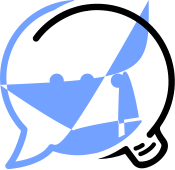

Tock resources¶
This page lists various presentations of Tock, giving an overview of the solution in addition to the main documentation and demo instance.
Conferences / Video¶
- AlloCovid @ Voice Tech Paris 2020 (by INSERM, Allo-Media & SNCF) ℹ️ info

- Tock & Melusine @ AI Paris 2020 (SNCF & MAIF) 🔳 slides (French)

- Conversational AI & Open Source @ Paris Open Source Summit 2019
(SNCF & guests from EDF, Enedis, Orange, SogetiLabs, TOSIT.fr)
📽️ 30 min (French) / 🔳 slides (English)

- Code a bot for Messenger and Google Assistant in 30 minutes
@ Devoxx France 2018 (live coding) 📽️ 30 min (French)

Meetup / Slides¶
- Tock (presented by SNCF & Enedis) @ Innovation Makers Alliance (2021) ℹ️ info

- Tock - The Open Conversation Kit @ Meetup Open Transport (2019) 🔳 slides (French)

- Tock - The Open Conversation Kit @ CRiP OpenSource & Co-développement (2017) 🔳 slides (French)

Don't hesitate to share with us more slides, documents and links about Tock.
Press kit¶
Tock logos are provided under the Apache 2 license.
Tock logo - default colors / transparent (download) :
{kind=link}

Tock logo - blue / transparent (download) :
{kind=link}

Tock logo - black / transparent (download) :
{kind=link}

Tock logo - white / transparent (download) :
{kind=link}

Last update: January 16, 2021